1 — Introduction
Ce dossier présente Lumina Pro, projet réalisé en solo dans le cadre de la Formation DWWM 2025/2026 à La Plateforme_ pour l'obtention du Titre Professionnel Développeur Web et Web Mobile.
Il retrace l'ensemble de la démarche, de la conception à la mise en service locale : analyse du besoin, choix techniques, modélisation de la base de données, implémentation du front-end et du back-end, sécurisation de l'application.
Lumina Pro est une application web de gestion de tâches collaborative basée sur la méthode Kanban : un tableau à colonnes personnalisables permet à une équipe de suivre l'avancement de ses missions, avec deux niveaux de droits (administrateur / utilisateur).
Le projet couvre l'ensemble des compétences attendues sur les deux activités du référentiel : développement front-end et back-end d'une application web sécurisée.
Qui suis-je ?
Je m'appelle Syrine Ben Hassine. Avant cette formation, je gérais des ateliers de couture et je faisais du stylisme assisté par ordinateur. La technologie m'a toujours intéressée, depuis une première certification en bureautique en 2001 : c'est cette envie de comprendre ce qui se cache derrière un site web qui m'a menée jusqu'ici, en reconversion vers le développement web.
Contexte de formation — La Plateforme_
La Plateforme_ est un centre de formation aux métiers du numérique basé à Cannes, qui propose des parcours de reconversion dans le développement web, la cybersécurité et l'intelligence artificielle. La formation prépare au titre professionnel de niveau 5 (Bac+2), reconnu par l'État. C'est dans ce cadre que j'ai mené le projet Lumina Pro du début à la fin, de la conception à la soutenance.
2 — Compétences du référentiel couvertes par le projet
2.1 Activité type n°1 — Développer la partie front-end d'une application web sécurisée
arborescence_wireframes.html).fetch vers l'API pour récupérer les données, gestion des erreurs, et protection contre les failles XSS : le texte tapé par l'utilisateur est nettoyé avant d'être affiché (escapeHTML()).2.2 Activité type n°2 — Développer la partie back-end d'une application web sécurisée
database/schema.sql), comptes de démonstration créés en s'inscrivant normalement sur le site.mysql2, requêtes préparées (avec des ? à la place des valeurs) sur toutes les routes pour éviter les injections SQL.README.md complet (installation, variables d'environnement, lancement), documentation de l'API avec Swagger UI.3 — Présentation, équipe et gestion de projet
3.1 Présentation générale
Lumina Pro est une plateforme web dont l'objectif est de permettre à une petite équipe de :
- visualiser ses tâches sous forme de tableau Kanban à colonnes personnalisables ;
- assigner des tâches aux membres de l'équipe et suivre leur priorité ;
- distinguer deux profils : administrateur (gestion de l'équipe et des colonnes) et utilisateur (gestion de ses tâches).
3.2 Besoins et objectifs de l'application
Remplacer un suivi de tâches informel (messages, tableurs) par un outil centralisé, simple et sécurisé, où chaque membre voit l'état d'avancement du travail collectif en un coup d'œil, sans avoir à gérer une solution SaaS tierce complexe.
3.3 User Stories
Utilisateur
- En tant qu'utilisateur, je veux m'inscrire et me connecter afin d'accéder à mon espace de travail.
- En tant qu'utilisateur, je veux créer, modifier et déplacer mes tâches entre les colonnes pour suivre mon avancement.
- En tant qu'utilisateur, je veux voir les membres de l'équipe afin de savoir qui est assigné à quoi.
- En tant qu'utilisateur, je veux consulter des statistiques sur l'avancement du projet (tâches par priorité, membres, tâches non assignées) pour avoir une vue d'ensemble rapide.
Administrateur
- En tant qu'administrateur, je veux créer, renommer et supprimer des colonnes pour adapter le tableau au workflow de l'équipe.
- En tant qu'administrateur, je veux gérer les comptes utilisateurs (voir la liste, supprimer un compte).
- En tant qu'administrateur, je veux effectuer toutes les actions disponibles pour un utilisateur standard.
3.4 MVP (Minimum Viable Product)
Le périmètre retenu pour la version initiale, effectivement livrée :
- authentification sécurisée (JWT + bcrypt) ;
- CRUD complet des tâches et des colonnes ;
- gestion des rôles admin / utilisateur ;
- vue équipe et page Statistiques (répartition des tâches par priorité) ;
- documentation API interactive (Swagger).
Pour déplacer une tâche, on utilise des boutons (⬅️ ➡️) plutôt que le glisser-déposer, et il n'y a pas de système de notifications dans cette version — deux pistes gardées pour la suite (voir évolutions futures).
Statistiques et journal d'audit : la page Statistiques ne passe pas par une route serveur spéciale — elle récupère les tâches et les membres avec /api/tasks et /api/users (Promise.all() pour lancer les deux requêtes en même temps), puis calcule et affiche le résultat directement dans le navigateur (camembert en SVG fait à la main, sans bibliothèque). La table logs (journal d'audit) existe dans la base de données et garde une trace de chaque suppression de tâche.
3.5 Cahier des charges
Exigences fonctionnelles — Un visiteur peut s'inscrire et se connecter. Un utilisateur connecté gère ses tâches (créer / modifier / déplacer / supprimer), consulte l'équipe et les statistiques du projet. Un administrateur gère en plus les colonnes et les comptes utilisateurs.
Exigences techniques — L'application utilise une API sécurisée par token JWT ; les mots de passe sont hachés (bcrypt), jamais stockés en clair ; les requêtes SQL sont préparées ; l'interface s'adapte à l'écran (ordinateur/mobile).
Exigences non-fonctionnelles — Accessibilité (HTML sémantique, attributs ARIA, bons contrastes, navigation au clavier — RGAA 4.1.2 / WCAG 2.1) ; sécurité (CORS, secrets isolés dans .env) ; documentation (README, Swagger).
3.6 Équipe et organigramme
Projet réalisé seule, dans le cadre de la formation DWWM 2025/2026 à La Plateforme_ (Cannes). J'ai fait toutes les étapes moi-même : comprendre le besoin, concevoir, coder le front-end, coder le back-end, sécuriser, tester et documenter.
3.7 Méthodologie et outils de gestion de projet
Méthode de travail : étape par étape (inspirée de la méthode Agile, adaptée à un projet solo). Chaque fonctionnalité est d'abord pensée, puis codée, puis testée, avant de passer à la suivante. Pas de sprints formels comme en entreprise, mais un travail régulier suivi avec les commits Git.
| Outil | Usage | Statut |
|---|---|---|
| Trello | Tableau Kanban de suivi des fonctionnalités à faire / en cours / terminées. Chaque card = une fonctionnalité ou un correctif identifié. | Utilisé pendant tout le projet |
| Git + GitHub | Versionnement continu avec 33 commits explicites. Dépôt public : github.com/syrinedev-06/LUMINA_PRO. Travail sur la branche main (projet solo). | Utilisé en continu |
| Visual Studio Code | IDE principal. Extensions : Live Server, GitLens, ESLint. | Environnement de développement |
| phpMyAdmin | Administration visuelle de la base MySQL (via XAMPP). | Outils de développement local |
| Swagger UI | Test et documentation de l'API en temps réel. | Documentation + tests API |
Le diagramme de GANTT ci-dessous, reconstitué à partir des commits Git, montre les 5 phases du projet de mai à juillet 2026 :
| Phase | S1 Mai | S2 Mai | S3 Mai | S4 Mai | S1 Juin | S2 Juin | S3 Juin | S4 Juin | S1 Juil | S2 Juil |
|---|---|---|---|---|---|---|---|---|---|---|
| 🚀 Initialisation | ||||||||||
| ⚙️ Cœur applicatif | ||||||||||
| 🔒 Sécurisation | ||||||||||
| ✅ Finalisation | ||||||||||
| 📋 Préparation soutenance |
4 — Environnement et architecture technique
4.1 Environnement de développement
Développement sous Windows 11 avec Visual Studio Code comme IDE, MySQL Server 8.0 pour la base de données locale, Node.js v24.14.0 pour le back-end. Démarrage manuel : service MySQL80 puis npm start dans backend/. Projet réalisé de mai à juillet 2026.
4.2 Choix techniques
| Côté | Technologies | Version exacte |
|---|---|---|
| Front-end | HTML5, CSS3 (8 modules), JavaScript ES6+ vanilla (aucun framework) | — |
| Back-end | Node.js, Express | Node.js v24.14.0, Express 5.2.1 |
| Base de données | MySQL (via mysql2) | MySQL 8.0.45, mysql2 3.22.2 |
| Sécurité | jsonwebtoken, bcrypt, cors, dotenv | jsonwebtoken 9.0.3, bcrypt 6.0.0, cors 2.8.6, dotenv 17.4.2 |
| Documentation | swagger-ui-express | 5.0.1 |
| Versioning | Git + GitHub | — |
J'ai choisi du JavaScript simple (sans framework front) et un accès direct aux données depuis les routes Express (sans ORM), pour bien comprendre comment chaque partie fonctionne, sans qu'une bibliothèque fasse le travail à ma place.
4.3 Architecture applicative
L'application a trois parties : le front-end (HTML/CSS/JS), l'API back-end, et la base de données MySQL. Le serveur Express sert directement les fichiers du front-end (express.static), donc tout est accessible depuis http://localhost:3000 une fois le serveur lancé. Je n'ai pas séparé le code en trois couches strictes (MVC) : chaque fichier de routes/ contient directement ses requêtes SQL. C'est plus simple à gérer pour un projet de cette taille, mais ça serait à revoir si l'application devait grandir (voir roadmap).
Un middleware (req.db = db) donne accès à la base de données à chaque requête, et un autre middleware (verifyToken) protège les routes sensibles en vérifiant le token JWT.
4.4 Versioning et workflow Git
Le projet est suivi en continu sur GitHub (syrinedev-06/LUMINA_PRO), avec des commits fréquents et clairs (ex. « Découpage modulaire de kanban.js en kanban.js, columns.js et tasks.js »). J'ai travaillé directement sur la branche main, sans créer de branches séparées par fonctionnalité — simple pour un travail en solo, mais à changer pour un vrai travail d'équipe (avec des branches feature/, fix/).
Le fichier .gitignore exclut node_modules/ et les fichiers de logs. Le fichier .env (qui contient les secrets) n'est jamais envoyé sur GitHub ; .env.example sert de modèle pour un autre développeur.
5 — Conception du front-end
5.1 Arborescence
- Page de connexion / inscription (
login.html) — point d'entrée public. - Tableau Kanban (
index.html) — vue principale après authentification : colonnes, cartes de tâches, sidebar de navigation. - Équipe — liste des membres et de leurs tâches assignées.
- Statistiques — page calculée côté front-end (camembert SVG) affichant la répartition des tâches par priorité et le nombre de membres, à partir des données déjà chargées via
/api/taskset/api/users.
Détail complet des wireframes basse fidélité dans arborescence_wireframes.html.
5.2 Charte graphique
Les couleurs principales sont un rose/fuchsia sur fond clair (pour bien lire le texte), avec une barre de navigation en bleu-gris foncé. La police est celle déjà installée sur l'ordinateur (Segoe UI), pour rester cohérent partout. Toutes les couleurs sont regroupées dans un seul fichier (frontend/css/variables.css), pour que chaque page utilise exactement les mêmes :
| Variable | Couleur | Usage |
|---|---|---|
--primary | #A10057 | Couleur de marque : boutons principaux, liens actifs, accents |
--primary-hover | #800045 | État survol des éléments primaires |
--sidebar-bg | #1e293b | Fond de la barre de navigation latérale |
--bg-main | #f8fafc | Fond général des pages |
--text-main | #000000 | Texte principal |
--text-muted | #334155 | Texte secondaire, libellés |
--border | #e2e8f0 | Séparateurs, bordures de cartes et de champs |
--danger | #fc16ce | Actions de suppression, priorité haute |
Police d'écriture : j'ai choisi Segoe UI, déjà installée sur Windows — pas besoin de la télécharger, elle s'affiche instantanément et reste lisible même en petite taille. Si elle n'est pas disponible (autre système), le navigateur utilise Arial à la place ('Segoe UI', Arial, sans-serif).
5.3 Maquettes et responsive
J'ai conçu l'interface d'abord pour ordinateur, puis je l'ai adaptée au mobile avec des media queries : la barre de navigation reste fixe sur ordinateur, mais devient un menu caché (accessible avec un bouton hamburger) en dessous de 900px ; les colonnes Kanban se scrollent horizontalement sur mobile.
6 — Conception du back-end
6.1 Base de données — méthode MERISE
J'ai modélisé la base de données en trois étapes, avec la méthode MERISE : MCD (les entités et leurs liens), MLD (les tables avec leurs clés), puis MPD (la vraie base MySQL). Le script database/schema.sql montre les quatre tables que server.js crée au démarrage : users, columns, tasks (les données de l'application) et logs (le journal qui garde une trace des actions, sans route pour le consulter).
6.1a MCD — Modèle Conceptuel de Données
Représentation des entités et de leurs associations, indépendamment de tout langage de base de données. Les cardinalités indiquent les contraintes de multiplicité entre entités.
6.1b MLD — Modèle Logique de Données
C'est la traduction du MCD en tables. Chaque relation devient une clé étrangère (FK) : un champ qui pointe vers l'id d'une autre table.
🔑 = Clé primaire (PK) · 🔗 = Clé étrangère (FK) · NN = NOT NULL · CASCADE = suppression en cascade · SET NULL = mise à NULL
6.1c MPD — Modèle Physique de Données (SQL réel)
logs garde une trace de chaque suppression de tâche (voir routes/tasks.js) : c'est le journal d'audit de l'application. Les statistiques, elles, sont calculées directement dans le navigateur plutôt que par une route serveur dédiée (voir section 3.4) — pas besoin d'une table supplémentaire pour ça.
Script SQL réel de database/schema.sql, qui reflète exactement les tables créées par server.js :
CREATE TABLE IF NOT EXISTS users (
id INT AUTO_INCREMENT PRIMARY KEY,
name VARCHAR(255) NOT NULL,
email VARCHAR(255) NOT NULL UNIQUE,
password VARCHAR(255) NOT NULL,
role ENUM('admin', 'user') DEFAULT 'user'
);
CREATE TABLE IF NOT EXISTS columns (
id INT AUTO_INCREMENT PRIMARY KEY,
title VARCHAR(255) NOT NULL,
position INT DEFAULT 0
);
CREATE TABLE IF NOT EXISTS tasks (
id INT AUTO_INCREMENT PRIMARY KEY,
title VARCHAR(255) NOT NULL,
description TEXT,
priority ENUM('high', 'medium', 'low') DEFAULT 'medium',
id_assigned INT,
id_col INT,
created_at TIMESTAMP DEFAULT CURRENT_TIMESTAMP,
FOREIGN KEY (id_assigned) REFERENCES users(id) ON DELETE SET NULL,
FOREIGN KEY (id_col) REFERENCES columns(id) ON DELETE CASCADE
);6.2 Dictionnaire de données (cœur applicatif actif)
Table : users
| Donnée | Description | Type | Obligatoire |
|---|---|---|---|
| id | Identifiant unique | INT (PK, auto-incrément) | Oui |
| name | Nom complet | VARCHAR(255) | Oui |
| Email (unique) | VARCHAR(255) | Oui | |
| password | Mot de passe haché (bcrypt) | VARCHAR(255) | Oui |
| role | admin / user | ENUM | Oui (défaut: user) |
Table : columns
| Donnée | Description | Type | Obligatoire |
|---|---|---|---|
| id | Identifiant unique | INT (PK) | Oui |
| title | Nom de la colonne | VARCHAR(255) | Oui |
| position | Ordre d'affichage | INT | Oui (défaut: 0) |
Table : tasks
| Donnée | Description | Type | Obligatoire |
|---|---|---|---|
| id | Identifiant unique | INT (PK) | Oui |
| title | Titre de la tâche | VARCHAR(255) | Oui |
| description | Détails de la tâche | TEXT | Non |
| priority | high / medium / low | ENUM | Oui (défaut: medium) |
| id_assigned | FK → users.id | INT | Non |
| id_col | FK → columns.id (ON DELETE CASCADE) | INT | Oui |
| created_at | Date de création | TIMESTAMP | Oui (auto) |
6.3 Propriétés ACID
MySQL garantit les propriétés ACID pour toutes les transactions, ce qui assure la cohérence des données même en cas d'erreur :
| Propriété | Signification | Application dans Lumina Pro |
|---|---|---|
| A — Atomicité | Une transaction est "tout ou rien" : elle réussit complètement ou n'a aucun effet | La suppression d'une colonne (ON DELETE CASCADE) supprime colonne ET ses tâches en une seule opération indivisible |
| C — Cohérence | La base reste dans un état valide avant et après chaque transaction ; les contraintes sont toujours respectées | L'ENUM priority refuse les valeurs non listées ; la clé étrangère id_col refuse un id de colonne inexistant |
| I — Isolation | Les transactions concurrentes n'interfèrent pas entre elles tant qu'elles ne sont pas validées | Deux utilisateurs créant une tâche simultanément ne génèrent pas de conflits d'AUTO_INCREMENT |
| D — Durabilité | Une fois une transaction validée (COMMIT), les données persistent même en cas de panne | Les tâches créées ou modifiées sont écrites sur disque par MySQL — un redémarrage du serveur ne les efface pas |
7 — Mission 1 — CRUD des tâches (front-end)
7.0 Introduction de la mission
La mission principale de Lumina Pro est la gestion complète des tâches : créer, lire, modifier, déplacer entre colonnes et supprimer des tâches depuis le tableau Kanban. Ça passe par le front-end (qui affiche l'interface et envoie les requêtes) et le back-end (qui vérifie les données et les enregistre en base).
tasks (cœur), columns (colonne de destination), users (assignation via FK id_assigned).7.1 Diagrammes associés
Trois diagrammes documentent le flux de cette mission :
- Diagramme de cas d'utilisation — qui peut faire quoi sur les tâches (use_case_uml.html)
- Diagramme d'activité — flux complet "Créer une tâche" avec swimlanes navigateur / serveur / BDD (diagramme_activite.html)
- Diagramme de packages — organisation modulaire du code (diagramme_packages.html)
7.2 Architecture et logique d'affichage
L'application a des pages HTML classiques (login.html, index.html), pas une Single Page Application (une seule page qui change tout sans jamais recharger). Chaque page charge ses propres fichiers JS (auth.js, kanban.js, tasks.js, columns.js, team.js, profile.js, ui.js), et api.js regroupe tous les appels réseau dans une fonction authFetch() qui ajoute le token JWT à chaque requête.
Le tableau Kanban est généré entièrement par JavaScript. La fonction renderBoard(columns, tasks) utilise Array.filter() pour trier les tâches par colonne, puis Array.map() pour construire le HTML de chaque carte. Le tableau entier est reconstruit à chaque appel, plutôt que modifié bout par bout.
7.3 Validation des données côté front
Avant tout envoi au serveur, le JavaScript vérifie que le champ titre n'est pas vide. Si la validation échoue, un message d'erreur s'affiche dans le formulaire et la requête n'est pas envoyée :
// frontend/js/tasks.js
if (!title || title.trim() === '') {
showError('Le titre de la tâche est obligatoire.');
return;
}Attention : cette validation côté front est uniquement un confort utilisateur. La vraie protection est côté serveur — jamais côté front seul.
7.3b Formulaire de création de tâche — HTML de qualité
Le formulaire de création utilise des balises HTML5 sémantiques avec <label> associé à chaque champ, des attributs required et aria-required pour l'accessibilité, et des types natifs appropriés (type="date", type="text") :
<!-- frontend/index.html — Formulaire de création de tâche -->
<form id="task-form">
<label for="task-title">Titre *</label>
<input type="text" id="task-title" name="title"
placeholder="Titre de la tâche" required
aria-required="true" autocomplete="off">
<label for="task-desc">Description</label>
<textarea id="task-desc" name="description"
placeholder="Détails de la tâche..."
rows="3" aria-label="Description de la tâche"></textarea>
<label for="task-priority">Priorité</label>
<select id="task-priority" name="priority">
<option value="low">Basse</option>
<option value="medium" selected>Normale</option>
<option value="high">Haute</option>
</select>
<label for="task-due">Date d'échéance</label>
<input type="date" id="task-due" name="due_date">
<label for="task-assign">Assigner à</label>
<select id="task-assign" name="id_assigned" aria-label="Assigner à un membre">
<option value="">— Non assigné —</option>
<!-- Options peuplées dynamiquement via GET /api/users -->
</select>
<button type="submit" aria-label="Créer la tâche">Créer la tâche</button>
</form>Points de qualité : required natif HTML5, aria-required pour les lecteurs d'écran, liste des membres peuplée en JavaScript via GET /api/users, type="date" pour le calendrier natif du navigateur sans librairie externe.
7.4 Sécurité XSS côté front
Toute donnée utilisateur affichée dans le DOM (titre de tâche, description, nom) passe par une fonction d'échappement HTML avant insertion :
// frontend/js/api.js — escapeHTML()
function escapeHTML(str) {
const div = document.createElement('div')
div.textContent = str
return div.innerHTML
}Cela neutralise les tentatives XSS : <script>alert('hack')</script> inséré dans un titre de tâche s'affiche comme texte brut, il n'est jamais exécuté.
7.5 Accessibilité et performances
CSS découpé en 8 fichiers thématiques pour la maintenabilité. Attributs aria-label sur tous les boutons icônes (✏️, 🗑️, ←, →), navigation clavier complète, contrastes vérifiés — détail dans le cahier de tests accessibilité (cahier_tests_accessibilite.html).
8 — Mission 2 — API REST et authentification JWT (back-end)
8.0 Introduction de la mission
La deuxième mission est la construction d'une API REST sécurisée : définir les routes, protéger l'accès avec JWT, communiquer en JSON avec le front-end, et appliquer les règles métier côté serveur. C'est la colonne vertébrale de l'application — toute action du front transite par cette API.
8.0a API REST et AJAX expliqués
| Concept | Définition | Dans Lumina Pro |
|---|---|---|
| API REST | Interface de communication entre front et back. Chaque URL = une ressource. Les méthodes HTTP (GET/POST/PUT/DELETE) indiquent l'action. | 12 routes organisées par ressource : /api/auth, /api/tasks, /api/columns, /api/users |
| AJAX | Technique permettant de faire des requêtes HTTP depuis JavaScript sans recharger la page. | authFetch() envoie des requêtes asynchrones vers l'API. La page ne se recharge pas — seul le board est mis à jour. |
| JSON | Format de données texte pour échanger des objets JavaScript entre front et back. | Toutes les réponses de l'API sont en JSON : {"id": 3, "title": "Fix bug", "priority": "high"} |
| async/await | Syntaxe JS pour attendre la réponse d'une requête réseau sans bloquer la page. | const res = await authFetch('/api/tasks'); const data = await res.json(); |
8.0b Diagramme de séquence — Connexion JWT
Le flux d'authentification complet est documenté dans le diagramme de séquence UML (diagramme_sequence.html). Il montre : saisie formulaire → POST /api/auth/login → bcrypt.compare → jwt.sign → stockage localStorage → requêtes suivantes avec header Authorization.
8.0c Tests de l'API — Swagger UI plutôt que Postman
Les routes de l'API ont été testées pendant le développement via Swagger UI, intégré directement au serveur Express via swagger-ui-express et accessible sur http://localhost:3000/api-docs. Swagger UI remplace ici l'usage habituel de Postman : chaque route est documentée avec ses paramètres, ses corps de requête JSON attendus, ses codes de retour, et est testable en un clic depuis l'interface. Ce choix couple documentation et test en un seul outil intégré au projet — un avantage par rapport à Postman qui est externe et dont les collections ne sont pas versionnées avec le code.
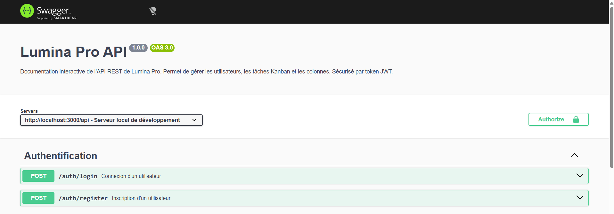
Page d'accueil de Swagger UI : titre, version de l'API, sélecteur de serveur et bouton d'autorisation JWT.
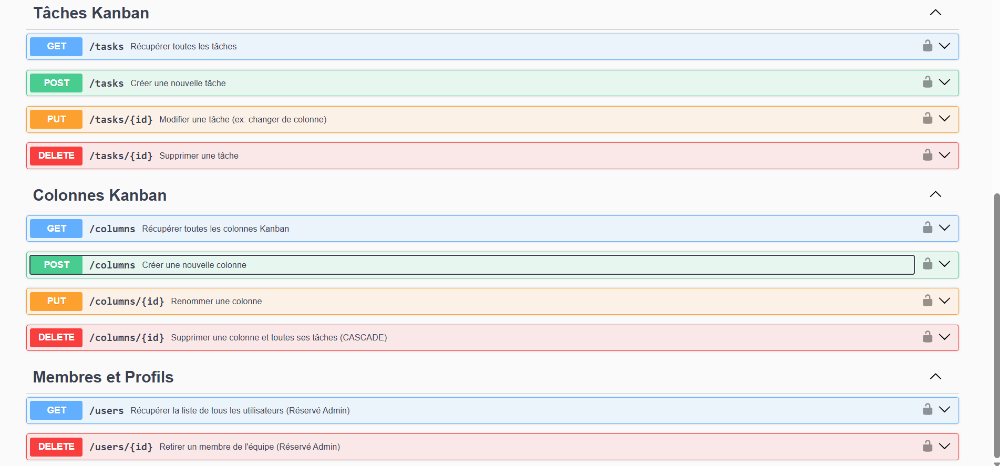
Les routes regroupées par ressource (Tâches, Colonnes, Membres), chacune avec sa méthode HTTP et sa description.
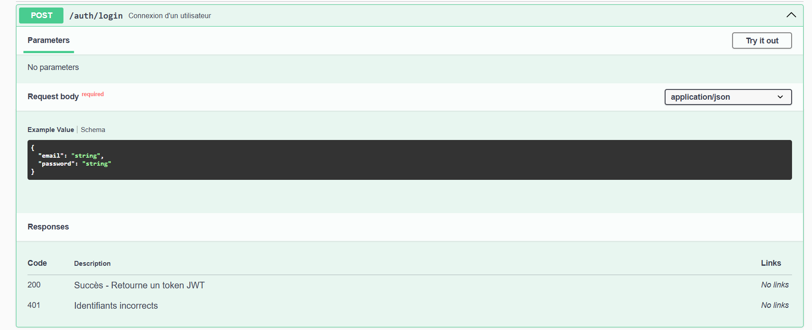
Détail d'une route dépliée (POST /auth/login) : schéma du corps de requête attendu et codes de réponse possibles (200, 401).
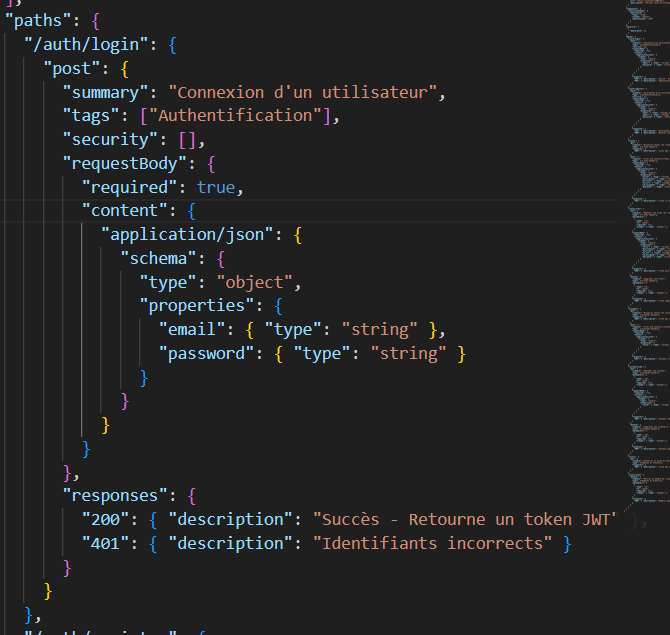
Le code source correspondant dans swagger.json : c'est cette définition JSON qui génère automatiquement l'écran ci-dessus.
8.1 Architecture et logique métier
server.js démarre Express, configure les middlewares (cors, express.json, envoi des fichiers du front), se connecte à MySQL et crée les tables automatiquement si elles n'existent pas encore. Il monte ensuite les routes :
app.use('/api/auth', require('./routes/auth'));
app.use('/api/users', verifyToken, require('./routes/users'));
app.use('/api/tasks', verifyToken, require('./routes/tasks'));
app.use('/api/columns', verifyToken, require('./routes/columns'));8.1b Évolution du schéma — exemple ALTER TABLE
Le champ due_date n'était pas présent dans la version initiale de la table tasks. Il a été ajouté en cours de développement sans recréer la table, via la commande SQL :
ALTER TABLE tasks ADD COLUMN due_date DATE AFTER priority;J'ai ensuite mis à jour database/schema.sql pour que les prochaines installations créent directement la table avec ce champ. C'est ce qu'on appelle une migration de schéma : modifier une base de données déjà en place, sans perdre les données existantes.
8.2 Logique métier : construction dynamique des requêtes UPDATE
Le frontend peut envoyer n'importe quelle combinaison de champs à modifier sur une tâche (déplacement = seul id_col, édition complète = tous les champs). La route PUT /api/tasks/:id construit dynamiquement la clause SET pour éviter de dupliquer la logique :
let sql = "UPDATE tasks SET ";
const params = [];
if (title) { sql += "title = ?, "; params.push(title); }
if (id_col) { sql += "id_col = ?, "; params.push(id_col); }
// ...
sql = sql.slice(0, -2) + " WHERE id = ?";
params.push(req.params.id);8.3 Sécurité et intégrité des données
Les routes /api/users, /api/tasks et /api/columns sont protégées par le middleware verifyToken. Quand on supprime une colonne, la contrainte ON DELETE CASCADE supprime automatiquement ses tâches avec elle — volontairement, pour ne pas laisser de tâches "orphelines" sans colonne.
La suppression d'une tâche (DELETE /api/tasks/:id) vérifie en plus qui en est le propriétaire, pour éviter une faille IDOR (Insecure Direct Object Reference — accéder à une ressource qui ne nous appartient pas juste en devinant son id) : un utilisateur standard ne peut supprimer que les tâches qui lui sont assignées, un administrateur peut tout supprimer. Cette règle est vérifiée côté serveur, pas seulement en cachant le bouton à l'écran :
// backend/routes/tasks.js — DELETE /:id
req.db.query("SELECT id_assigned FROM tasks WHERE id = ?", [req.params.id], (err, results) => {
const isOwner = results[0].id_assigned === req.user.id;
if (req.user.role !== 'admin' && !isOwner) {
return res.status(403).json({ error: "Vous ne pouvez supprimer que vos propres tâches." });
}
// ... suppression
});8.4 Codes de statut HTTP utilisés
| Code | Signification | Quand |
|---|---|---|
| 200 OK | Succès | GET, PUT réussis |
| 201 Created | Ressource créée | POST /api/tasks, POST /api/columns |
| 400 Bad Request | Données invalides | Titre manquant, champ requis absent |
| 401 Unauthorized | Non authentifié | Token absent ou expiré |
| 403 Forbidden | Accès refusé | Suppression d'une tâche dont on n'est pas propriétaire |
| 404 Not Found | Ressource inexistante | ID de tâche/colonne inexistant |
| 500 Internal Server Error | Erreur serveur | Erreur SQL inattendue |
9 — Routes
| Méthode | Endpoint | Accès | Description |
|---|---|---|---|
| POST | /api/auth/register | Public | Inscription (hash bcrypt du mot de passe) |
| POST | /api/auth/login | Public | Connexion, retourne un token JWT (24h) |
| GET | /api/users | JWT | Liste de l'équipe (id, name, email, role — jamais le mot de passe) |
| DELETE | /api/users/:id | JWT | Supprimer un utilisateur |
| GET | /api/tasks | JWT | Liste des tâches, triées par colonne puis priorité |
| POST | /api/tasks | JWT | Créer une tâche |
| PUT | /api/tasks/:id | JWT | Modifier / déplacer une tâche |
| DELETE | /api/tasks/:id | JWT (propriétaire ou admin) | Supprimer une tâche |
| GET | /api/columns | JWT | Liste des colonnes, triées par position |
| POST | /api/columns | JWT | Créer une colonne (position = max+1) |
| PUT | /api/columns/:id | JWT | Renommer une colonne |
| DELETE | /api/columns/:id | JWT | Supprimer une colonne (cascade sur ses tâches) |
| GET | /api-docs | Public | Documentation interactive Swagger UI |
Documentation complète et testable en direct sur http://localhost:3000/api-docs une fois le serveur lancé.
10 — Sécurité de l'application
10.1 Système d'authentification
Hachage bcrypt — coût de hachage (salt rounds) de 10, appliqué à l'inscription :
const hashedPassword = await bcrypt.hash(password, 10);JWT — à la connexion, après vérification par bcrypt.compare, un jeton signé est émis (payload id + role, expiration 24h) :
const token = jwt.sign({ id: user.id, role: user.role }, SECRET_KEY, { expiresIn: '24h' });Le middleware verifyToken vérifie que le header Authorization: Bearer <token> est présent, contrôle la signature du token (jwt.verify), puis range les infos décodées (id, rôle) dans req.user pour que la route suivante puisse les utiliser.
10.2 Protections mises en place
| Risque | Protection |
|---|---|
| Injection SQL | Requêtes préparées avec placeholders ? sur toutes les routes |
| XSS | escapeHTML() avant toute insertion de contenu utilisateur dans le DOM |
| Mots de passe | Hachage bcrypt irréversible, sel aléatoire unique par utilisateur |
| CSRF | Token JWT transmis en header Authorization, jamais en cookie |
| IDOR (suppression de tâche) | Vérification côté serveur que l'utilisateur est propriétaire de la tâche ou admin avant suppression |
| CORS | Middleware cors() activé (ouvert en développement, à restreindre à l'origine du front en production) |
| Brute-force sur la connexion | Rate limiting par IP dans routes/auth.js : 5 tentatives échouées max, blocage 15 minutes (429 Too Many Requests) |
SECRET_KEY) et les identifiants de connexion à la base de données sont lus depuis .env via dotenv (chargé en tête de server.js) — aucun secret en dur dans le code source.
11 — Accessibilité, SEO et RGPD
11.1 Accessibilité
Démarche conforme au RGAA 4.1.2 / WCAG 2.1 : attributs aria-label/role sur les boutons icônes, navigation clavier, contrastes vérifiés, <label> associé à chaque champ. Un cahier de tests d'accessibilité dédié a été rédigé et exécuté manuellement (voir cahier_tests_accessibilite.html).
11.2 SEO
HTML5 sémantique (structure de titres cohérente, balises appropriées). L'application étant un outil interne derrière authentification, l'indexation par les moteurs de recherche n'est pas un enjeu prioritaire — le soin porté au HTML sémantique sert avant tout l'accessibilité.
11.3 RGPD
Données collectées strictement minimales : nom, email, mot de passe (haché). Aucune donnée sensible. Aucune transmission à des tiers. Suppression de compte possible par un administrateur. Variables sensibles (SECRET_KEY, identifiants base de données) isolées dans .env, non versionné.
11.4 Audit Lighthouse — page index.html
| Performance | Accessibilité | Best Practices | SEO |
|---|---|---|---|
| 97 | 96 | 100 | 100 |
Performance (97) : chargement quasi instantané — First Contentful Paint 0,3 s, Total Blocking Time 0 ms, Speed Index 0,3 s. Seule piste d'amélioration identifiée : réduire le poids des images (~42 KiB d'économie estimée).
Accessibilité (96) : 21 audits automatiques passés — attributs aria-* valides et correctement orthographiés, boutons avec nom accessible, images avec alt, champs de formulaire associés à un <label>.
Best Practices et SEO (100) : page non bloquée à l'indexation, balise <title> et meta description présentes, statut HTTP correct, liens explicites et crawlables.
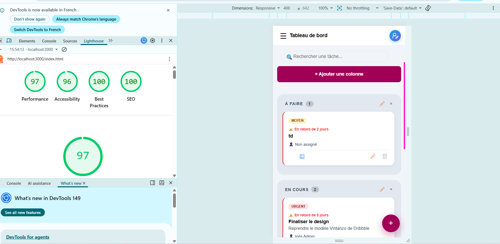
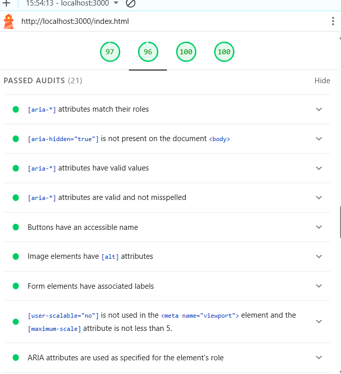
Détail des 21 audits d'accessibilité passés avec succès.
12 — Tests et jeu d'essai
12.1 Vérifications manuelles
J'ai testé 12 scénarios directement sur le serveur (vraies requêtes HTTP) : l'accessibilité du site, la connexion (avec un bon compte, un mauvais, sans token), le CRUD des tâches et des colonnes, la suppression en cascade, la protection du mot de passe, et le parcours inscription → connexion. Détail complet dans revision diplôme/Cahier_de_Tests_Lumina_Pro.html — voici le résumé :
| Test | Description | Résultat |
|---|---|---|
| TEST001 | Accessibilité du site | OK |
| TEST002 | Connexion avec un compte valide | OK |
| TEST003 | Connexion avec un compte inexistant | OK |
| TEST004 | Accès à une route protégée sans token | OK |
| TEST005 | Création d'une tâche sans titre | OK |
| TEST006 | Création d'une tâche valide | OK |
| TEST007 | Liste des colonnes | OK |
| TEST008 | Déplacement d'une tâche entre colonnes | OK |
| TEST009 | Suppression d'une colonne contenant une tâche (cascade) | OK |
| TEST010 | Liste des utilisateurs sans exposition du mot de passe | OK |
| TEST011 | Inscription d'un nouveau compte | OK |
| TEST012 | Connexion avec le compte fraîchement inscrit | OK |
12.2 Tests automatisés
Aucune suite automatisée n'est en place à ce jour. Une suite Jest + Supertest ciblant en priorité l'authentification et le CRUD des tâches est identifiée comme amélioration prioritaire (voir roadmap).
12.3 Jeu d'essai
Le compte de démonstration est créé simplement, avec le fonctionnement normal de l'application : inscription par POST /api/auth/register (le mot de passe est haché avec bcrypt comme pour n'importe quel compte), puis le rôle est changé en admin directement dans la base :
| Rôle | Mot de passe | |
|---|---|---|
| admin | admin@lumina.com | Lumina1! |
| user | user@lumina.com | Lumina1! |
UPDATE users SET role='admin' WHERE email='admin@lumina.com';user par défaut.
13 — Déploiement de l'application
13.1 Préparation de l'environnement
L'application, c'est un serveur Node.js/Express qui expose une API et qui envoie aussi directement les fichiers du front-end (pas d'étape de build à faire avant). Il faut un serveur MySQL 8.0 démarré ; les tables se créent automatiquement au premier lancement du serveur.
13.2 Configuration
La configuration est dans un fichier .env (jamais envoyé sur GitHub, avec .env.example comme modèle), chargé par dotenv dès la première ligne de server.js : il contient la clé secrète SECRET_KEY et les identifiants de connexion à la base (DB_HOST, DB_USER, DB_PASSWORD, DB_NAME, PORT). On installe les dépendances avec npm install, on démarre avec npm start — après avoir démarré le service MySQL80.
13.3 Mise en ligne et exploitation
Pour l'instant, le projet tourne seulement en local (XAMPP + Node), sans hébergement en ligne. Les pistes pour la suite (hébergement type O2Switch ou VPS, HTTPS, Docker) sont notées dans la roadmap.
14 — Roadmap et évolutions futures
- Ajouter, si le besoin se confirme, une route serveur dédiée aux statistiques et une route de consultation du journal d'audit — une version front-end légère des statistiques existe déjà (voir section 3.4).
- Ajouter une suite de tests automatisés (Jest + Supertest) sur l'authentification et le CRUD des tâches.
- Persister le rate limiting de
/api/authdans Redis plutôt qu'en mémoire, pour tenir la charge sur plusieurs instances du serveur (la protection anti brute-force elle-même est déjà en place, voir section 10.2). - Séparer plus clairement les routes, les contrôleurs et les modèles, pour que le code reste facile à gérer si l'application grandit.
- Conteneuriser l'application avec Docker et documenter un déploiement en environnement distant (HTTPS, variables d'environnement de production).
- Drag & drop natif pour le déplacement des tâches (actuellement via boutons directionnels, un choix pris pour simplifier l'UI et le code).
15 — Conclusion
15.1 Bilan du travail réalisé
Lumina Pro est une application de gestion de tâches Kanban fonctionnelle, développée en solo en 3 mois (mai–juillet 2026). Le MVP défini en début de projet a été intégralement livré :
- Authentification sécurisée complète (inscription, connexion, JWT 24h + hachage bcrypt) ;
- CRUD complet des tâches avec gestion des priorités (ENUM), dates d'échéance et assignation à un membre ;
- Gestion des colonnes et des droits admin / utilisateur ;
- Vue équipe et page Statistiques (répartition des tâches, calculée côté front) ;
- API REST documentée avec Swagger UI (12 routes, codes HTTP sémantiques sur toutes les réponses) ;
- Interface responsive (desktop / tablette / mobile) avec accessibilité RGAA 4.1.2 vérifiée sur 30 critères.
J'ai préféré un cœur d'application simple et bien maîtrisé plutôt que d'accumuler des fonctionnalités à moitié finies — le drag & drop et les notifications restent des pistes pour plus tard (voir roadmap). La page Statistiques est calculée directement dans le navigateur (voir section 3.4), et la table logs garde une trace de chaque suppression de tâche.
Pendant le développement, j'ai trouvé et corrigé plusieurs problèmes : un bug d'affichage CSS dans les colonnes Kanban (min-height: 0 avec overflow-y: auto), des secrets JWT écrits en dur dans le code que j'ai déplacés dans .env, des console.log() de test que j'ai enlevés, et une faille de sécurité (IDOR) sur la suppression de tâches, corrigée en vérifiant côté serveur que l'utilisateur a bien le droit de supprimer (et pas seulement en cachant le bouton côté écran).
15.2 Bilan de la formation
Cette formation DWWM à La Plateforme_ représente une reconversion depuis le secteur de la couture et du stylisme assisté par ordinateur. La passion pour la technologie, présente depuis une première certification en bureautique en 2001, n'avait jamais disparu ; cette formation a été l'occasion de la poursuivre concrètement. Durant cette formation, elle m'a permis de passer d'une curiosité pour ce qui se cache derrière un site web à la capacité de concevoir, développer et documenter une application complète de bout en bout, seule.
Les principales difficultés surmontées ont été celles d'une débutante en programmation : comprendre la logique asynchrone de JavaScript (pourquoi une réponse du serveur n'arrive pas instantanément), me familiariser avec la syntaxe et les erreurs qu'elle provoque au début, apprendre à lire un message d'erreur pour remonter à sa cause, et prendre l'habitude de modéliser les données avant d'écrire la moindre ligne de code. Ces obstacles ont été levés par la pratique directe sur Lumina Pro plutôt que par des exercices isolés — ce qui a rendu l'apprentissage concret et durable.
La formation a également renforcé des compétences transversales : gestion de projet solo (Trello, Git avec 33+ commits explicites), documentation technique (Swagger UI, README, dossier professionnel complet), et rigueur dans l'identification et la correction des failles de sécurité. Elle a confirmé une appétence particulière pour le développement back-end.
15.3 La suite
À court terme, l'objectif est de continuer à me former et de progresser vers l'intelligence artificielle, un domaine qui me passionne, tout en consolidant les bases acquises en développement web durant cette formation.
Sur Lumina Pro spécifiquement, les évolutions prioritaires identifiées sont : la mise en production sur un VPS avec HTTPS, l'ajout d'une suite de tests automatisés Jest + Supertest sur l'authentification et le CRUD, et l'introduction d'un vrai workflow de branches Git pour simuler un contexte d'équipe. Ces améliorations sont réalistes et permettront de faire vivre le projet au-delà de l'examen.
Ce titre DWWM constitue un bon début dans les nouvelles technologies, une base solide sur laquelle m'appuyer pour aller vers ce qui me passionne aujourd'hui : l'intelligence artificielle.
16 — Annexes
Tous les documents complémentaires sont disponibles dans le dossier SOUTENANCE/ du projet. Les liens ci-dessous sont accessibles en ouvrant les fichiers HTML localement :
| Document | Fichier | Contenu |
|---|---|---|
| Diagramme de cas d'utilisation | use_case_uml.html |
UML — 2 acteurs, 14 cas d'utilisation, relations «include» et héritage |
| Diagramme de séquence | diagramme_sequence.html |
UML — Flux complet de la connexion JWT (navigateur → serveur → BDD → token) |
| Diagramme d'activité | diagramme_activite.html |
UML — 3 flux : créer une tâche (swimlanes), connexion, déplacement de tâche |
| Diagramme de packages | diagramme_packages.html |
UML — Organisation modulaire : packages frontend, backend, database, sécurité |
| Arborescence et wireframes | arborescence_wireframes.html |
Arborescence des pages, wireframes basse fidélité (login, kanban, mobile) |
| Charte graphique | Charte_Graphique_Lumina_Pro.html |
Palette complète, typographie, composants visuels |
| Cahier de tests fonctionnels | revision diplôme/Cahier_de_Tests_Lumina_Pro.html |
12 scénarios de test avec résultats |
| Cahier de tests accessibilité | cahier_tests_accessibilite.html |
30 critères WCAG 2.1 / RGAA testés manuellement |
| Résumé du projet | Resume_Projet_Lumina_Pro.html |
Résumé court en style Arte Facto (présentation jury) |
| Lexique technique | revision diplôme/Lexique_Technique_Lumina_Pro.html |
30+ termes techniques expliqués simplement (6 pages A4) |
| Schéma SQL de référence | database/schema.sql |
Script SQL complet : CREATE TABLE, clés étrangères, contraintes |
| README | README.md |
Installation complète, comptes de démo, structure du projet, sécurité |
16.1 Capture de code — Protection anti brute-force (rate limiting)
Extrait de backend/routes/auth.js : les trois fonctions qui protègent la route de connexion contre les attaques par force brute (voir section 10.2).
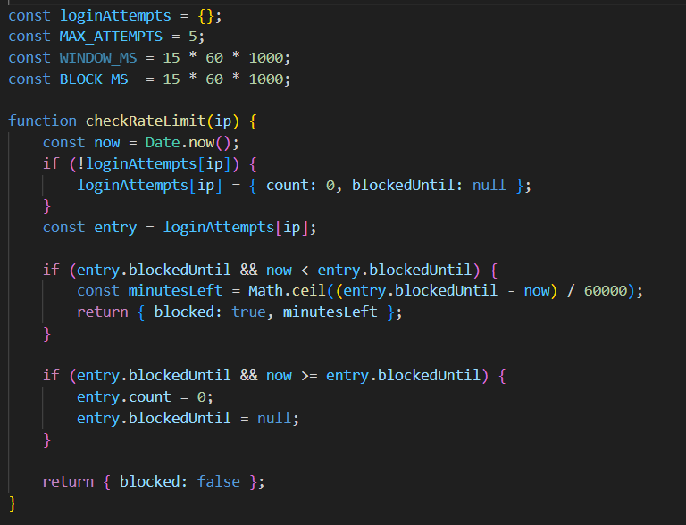
Les constantes (MAX_ATTEMPTS, BLOCK_MS...) et checkRateLimit(), appelée avant tout traitement de connexion.
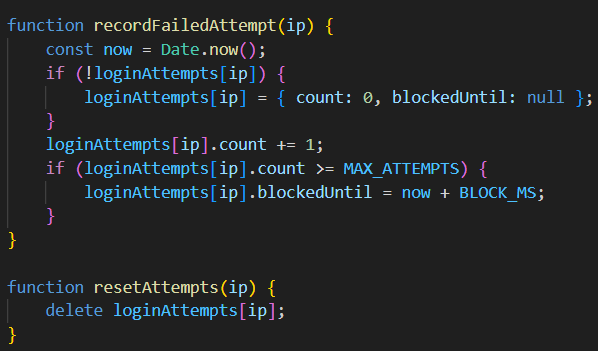
recordFailedAttempt() incrémente le compteur et déclenche le blocage au 5ᵉ échec ; resetAttempts() remet le compteur à zéro après une connexion réussie.
16.2 Captures d'écran de l'application
Application fonctionnelle et démontrable en live depuis http://localhost:3000.
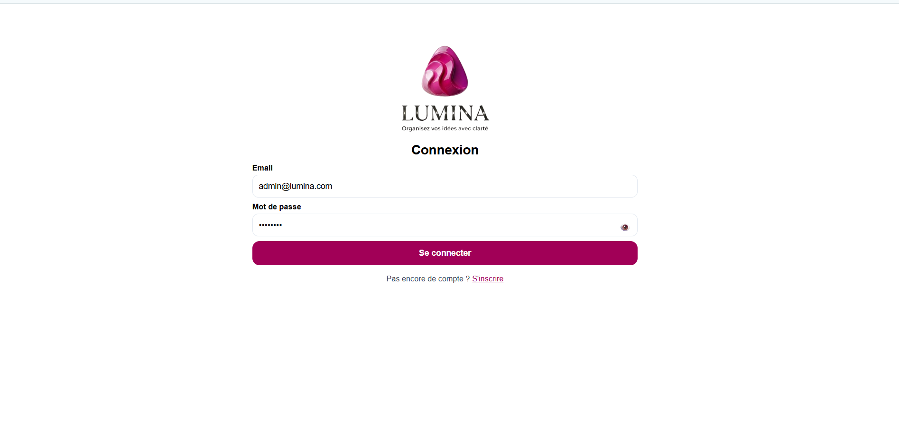
Page de connexion (login.html).
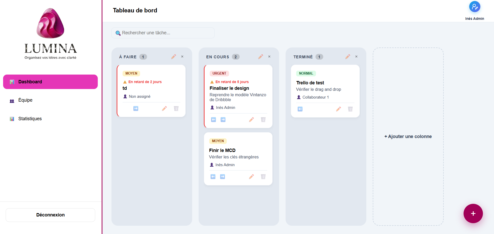
Tableau de bord Kanban : colonnes, cartes de tâches, badges de priorité et d'échéance.
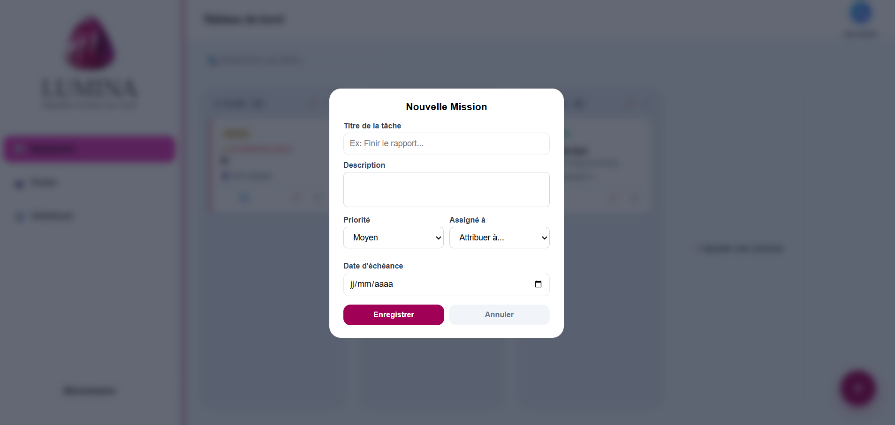
Modale de création d'une tâche (titre, description, priorité, assignation, échéance).
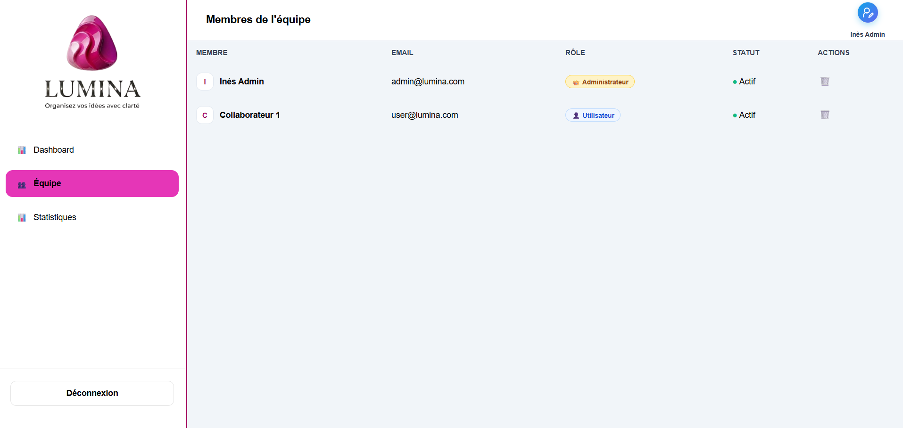
Page Équipe, réservée à l'administrateur : liste des membres, rôle, statut.
16.3 Version mobile (≤ 600px)
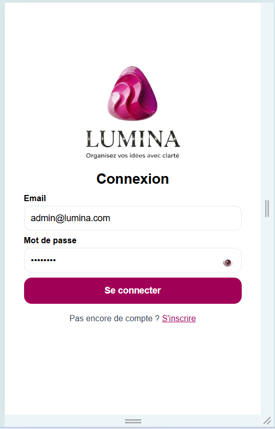
Connexion
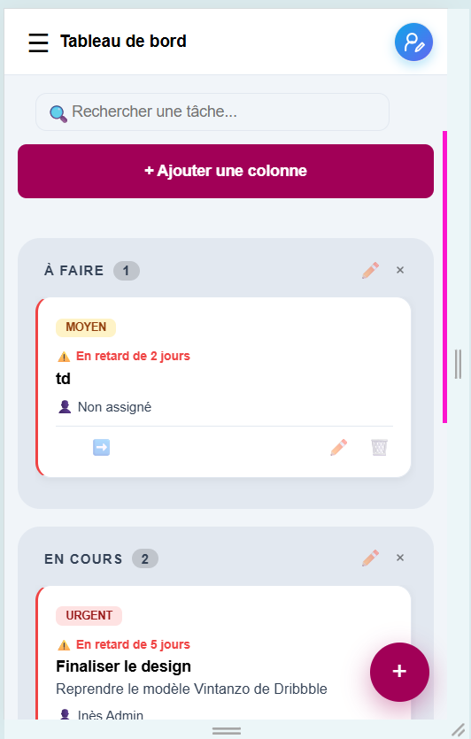
Kanban (colonnes empilées)
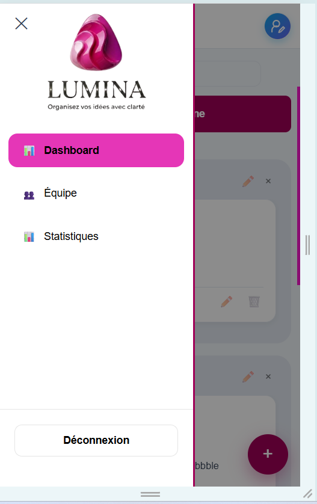
Menu en tiroir
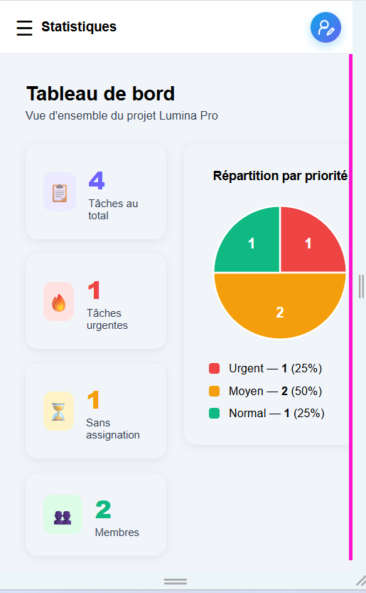
Statistiques
Le tableau de la page Équipe est plus large que l'écran mobile ; il se scrolle horizontalement au doigt pour révéler les colonnes Rôle, Statut et Action.
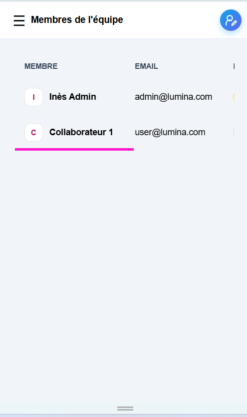
Équipe — vue initiale
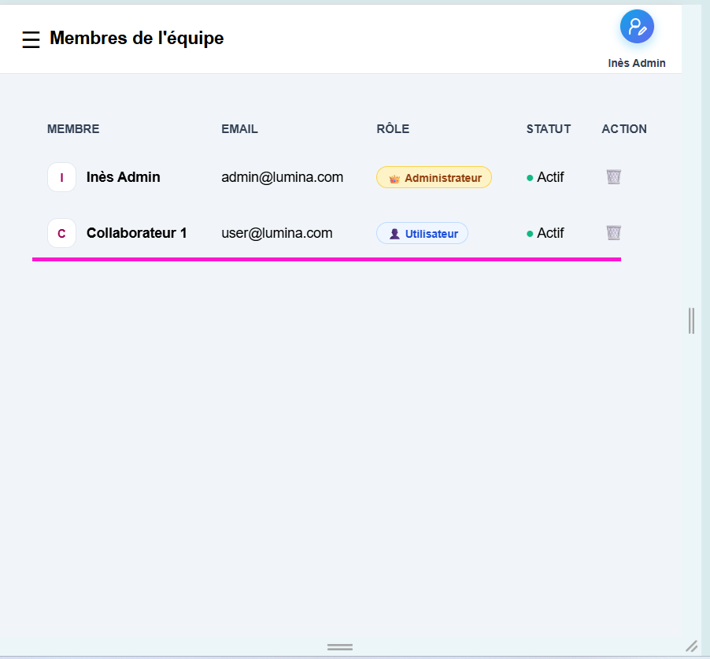
Équipe — après scroll